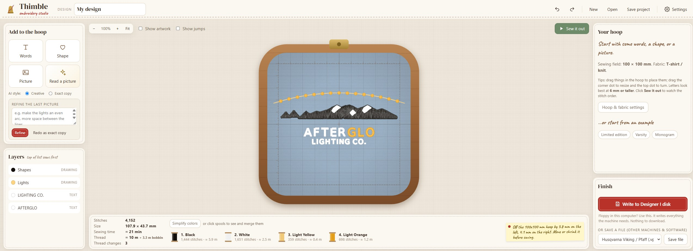

Turn words, simple shapes and logos into clean machine-embroidery files, and write them straight to a Husqvarna Viking Designer I floppy disk.
Part
Embroidery studio
Built with
Python, in the browser
Runs
On your own computer
Status
In development
Screens

The AFTERGLO logo in the hoop: 4,152 stitches, four threads, about 21 minutes to sew. The layers, thread chart, and Designer I disk button are all on one screen.
Sew-out replayA finished stitch-out
Specifications
Words
Hand-digitized embroidery fonts with the stitch direction and sewing order set for every letter, plus about 85 auto-digitized fonts. Curves, spacing, per-letter colors, satin borders, multi-line alignment.
Shapes
Heart, star, circle, ring, block, frames, line
Pictures
Flat artwork split into thread colors and traced. Wide areas become tatami fill, narrow strokes become satin.
Read a picture
Claude reads the words, fonts, colors, and artwork in a picture and rebuilds them as embroidery: text re-set in embroidery fonts, logos redrawn as clean shapes instead of traced pixels
Threads
Thread chart with stitch counts and thread length. Merge look-alike colors.
Sew it out
Replays the stitch order at real machine speed or faster
Export
VP3, PES, DST, JEF, EXP, SHV, or a Designer I floppy layout. Designs that run off the hoop are never exported.
Designer I disk
Writes the design to the next free slot of Menu 1, up to 36, and reads every file back to check it
Stitch settings
Based on Ink/Stitch: 0.4 mm satin spacing, underlay, pull compensation, and density per fabric: woven, knit, fleece, towel, cap
Runs
A local web server. Only the AI picture reader goes online.
Related
The first test stitch-out is on the Rocket Forge page
How it got built
To be writtenWhy build Thimble, and what the Designer I needed that other software couldn't do.